Introduction
Almost all the native IOS applications are written in Objective-C. All these apps use Cocoa, which is a library that sits on top on Objc-C and provides high level APIs that make development for Mac and IOS much easier. Cocoa also adds a runtime environment for the applications. In this article, we will focus on understanding the Objective-C runtime and all the intricate details about how the language functions internally. This will help us get a much deeper understanding of its applications to IOS application security.
Objective-C runtime
Objective-C is a runtime-oriented language. Now the question that arises is, what is a runtime language? A runtime language is a language that decides what to implement in a function and other decisions during the runtime of the applications. Is Objective-C a runtime language? NO. It is a runtime-oriented language, which means that whenever it is possible, it defers decisions from compile and link time to the time when the code in the application is actually being executed. As pointed out earlier, Cocoa provides the runtime environment needed by IOS applications. Here is a paragraph from the Apple documentation shown in the image down below which will make things absolutely clear. You can read the documentation here.
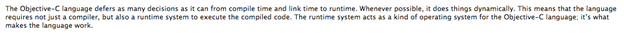
Let’s have a look now to check if the runtime library is imported in projects or not. Ideally, it should be with every IOS application. To check this, log in to your device and go to the applications directory.
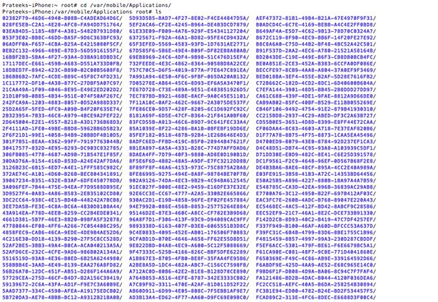
Now type “ls *” to get a look at the entire listing of directories.
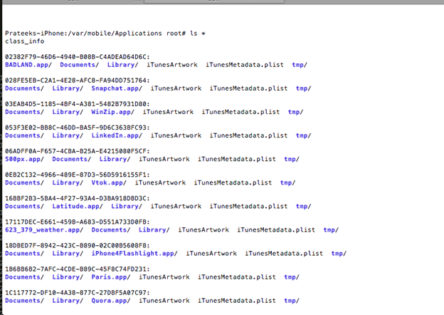
Let’s look at the BADLAND IOS app. Just in case some of you don’t know, BADLAND is a very popular game on IOS. Let’s go inside the Badland directory. Once you are inside the folder, go inside the BADLAND.app folder and use the otool utility on the Badland binary
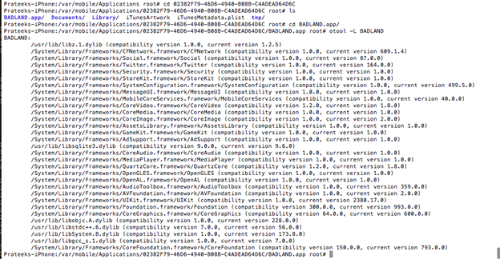
We can now see that it imports quite a lot of frameworks as well as libraries. The objc-runtime library is the one shown in the figure below.
This is the library that makes runtime manipulation possible in Objective-C. By default, it is included in all IOS apps. Here are the otool results for the Google Maps IOS app. As you can see, it also includes the Objective-C runtime library.
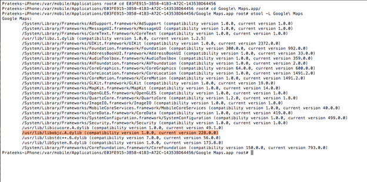
Runtime Analysis with GDB
In this section, we will look at how we can observe the flow of the app using GDB. The first thing is to install a proper version of gdb. The gdb version available from the Cydia store doesn’t work properly. So, make sure you get the binary from some other source. Once it is done, sftp into your device and upload the binary as shown in the figure below.
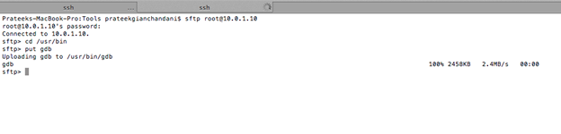
Then make sure it has the appropriate permissions to run.
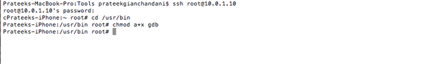
To hook into a running process, it is first important to make sure that the process is running. In this case, we will perform the tests on the Google Maps IOS app. So let’s start the app on our device and fetch its process id. Also, make sure that the app is running in foreground. As we can see from the figure below, the process id for the Google maps app is 661. Note that the process id may be different for you.
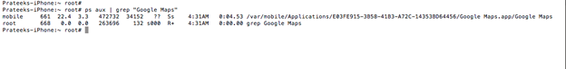
Now, let’s use GDB to hook into this process.
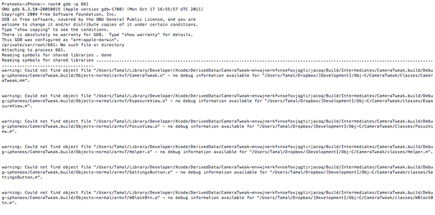
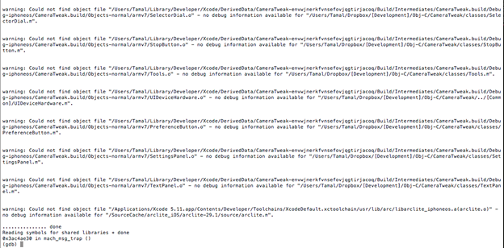
As you can see, we have successfully hooked into the process. You can ignore the warnings for now.
Objective-C is based on messaging, and whenever a message is being sent, the objc_msgSend() method gets called. In order to analyze the flow of the app, I am going to add a breakpoint for the most basic call, i.e objc_msgSend and print the values of $r0 and $r1. From $r0 we can find out the class on which the method is being called and $r1 can be used to find out the selector. Note that even though this may lead to too much detail, as objc_msgSend is called everytime a message is being sent. In the coming articles, we will look at how we can use it more efficiently. So basically, whenever a breakpoint is hit, I am going to print the values of $r0 and $r1 and continue the app. Here is how it’s done.
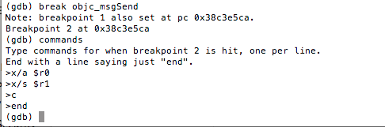
Let’s continue the app by typing the c command.
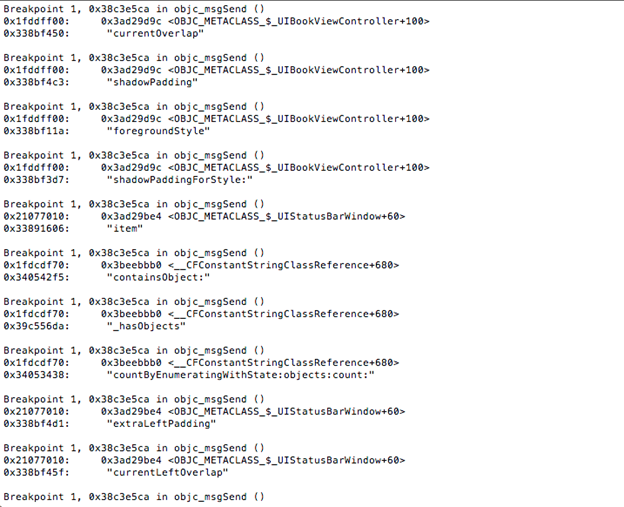
As you can see, this helps us a lot in analyzing the flow of the app. Again, this is just too much information and may not be useful in real time analysis of applications, but this is just to show how much we can figure out about the implementation of an app.
Method Swizzling
We already learnt that all the IOS apps use a runtime environment while execution which means that many of the decisions are taken at runtime. As the name suggests, method swizzling is just another weapon that we can use to our advantage for modifying the behaviour of an IOS application. It allows us to change the mapping from the selector to the implementation, which we could use to our advantage and call our own methods instead. We will look into Method Swizzling in great detail in the next article.
References: